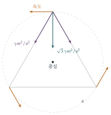

STEP I 1999, 문제 11
계속 읽기 전에 문제를 먼저 읽어 보자. 문제는 STEP Support Programme의 문제 데이터베이스에 있다: step.maths.org/questions/99-s1-q11
도입
중력으로 서로 끌어당기는 두 물체의 운동은 뉴턴(Newton)이 보였고 10.6 절에서 설명했듯이 완전히 풀 수 있다. 각 물체는 공통 질량중심(centre of mass)을 초점으로 하는 원뿔곡선(conic) 위를 움직이는데, 두 물체가 서로 묶여 있으면 타원(ellipse), 서로에게서 벗어날 만큼 에너지가 충분하면 포물선(parabola)이나 쌍곡선(hyperbola)을 그린다. 그런데 세 번째 물체를 더하면 모든 것이 달라진다. 삼체 문제(three-body problem)는 익숙한 함수로 나타낼 수 있는 일반해가 없으며, 1890년 앙리 푸앵카레(Henri Poincaré)는 그 해가 혼돈(chaos)적일 수 있음을 발견했다. 이것이 수학에 혼돈이 처음 등장한 순간이다.
그러나 어떤 특수해는 아주 단순하다. 1772년 조제프루이 라그랑주(Joseph-Louis Lagrange)는 정삼각형(equilateral triangle)의 세 꼭짓점에 놓인 세 물체가 삼각형 모양을 그대로 유지한 채 바퀴처럼 강체 회전할 수 있음을 발견했다. 이 문제는 질량이 같은 경우에 그 해를 구한다. 라그랑주의 삼각형은 단순한 호기심거리가 아니다. 태양, 목성, 그리고 수천 개의 “트로이(Trojan)” 소행성이 정확히 이런 배치를 이루고 있으며, 오늘날 우주 망원경들도 이와 비슷한 지점에 자리 잡고 있다.
시작하기 전에
별 하나가 반지름 \(R\)인 원 위를 각속도(angular velocity) \(\omega\)로 움직이려면 그 별에 작용하는 힘의 합은 어떠해야 하는가?
그 크기는 \(m\omega^2R\)이고 방향은 원의 중심을 향해야 한다. 따라서 각 별에 작용하는 중력의 합이 삼각형의 중심을 향하는지 확인하고, 그 크기가 알맞도록 하는 \(\omega\)를 구하면 된다.
차근차근 풀기
단계 1 기하
한 변의 길이가 \(a\)인 정삼각형의 각 꼭짓점에서 중심까지의 거리는 얼마인가?
중심은 각 중선(median) 위에 있으며, 꼭짓점에서부터 중선 길이의 3분의 2인 지점에 있다. 중선의 길이는 \(a\sin 60^\circ = \frac{\sqrt3}{2}a\)이므로 각 꼭짓점에서 중심까지의 거리는 \[R = \frac23\cdot\frac{\sqrt3}{2}a = \frac{a}{\sqrt3}.\] 이다. 대칭성에 의해 삼각형의 중심은 질량이 같은 세 별의 질량중심이다.
단계 2 별 하나에 작용하는 힘
나머지 두 별은 각각 크기 \(\frac{\gamma m^2}{a^2}\)인 힘으로 끌어당긴다. 두 힘 사이의 각은 얼마인가? 두 힘의 합력(resultant)은 무엇이며, 어느 방향을 향하는가?
두 힘은 그 별에서 만나는 삼각형의 두 변을 따라 향하므로, 두 힘 사이의 각은 \(60^\circ\)이다. 대칭성에 의해 합력은 이 각의 이등분선(bisector) 위에 놓이고, 이 이등분선은 중심을 지난다. 각 힘은 이등분선과 \(30^\circ\)를 이루므로 합력의 크기는 \[2\cdot\frac{\gamma m^2}{a^2}\cos 30^\circ = \frac{\sqrt3\,\gamma m^2}{a^2},\] 이고 방향은 중심을 향한다(그림 10.8.1).
단계 3 각속도
합력을 \(m\omega^2R\)와 같게 놓으면 \[m\omega^2\frac{a}{\sqrt3} = \frac{\sqrt3\,\gamma m^2}{a^2}, \qquad\text{따라서}\qquad \omega^2 = \frac{3\gamma m}{a^3}.\] 이다. 이 각속도에서는 (대칭성에 의해) 같은 계산이 각 별에 똑같이 적용되므로, 세 별 모두 중심 둘레의 원 위를 움직이며 삼각형의 모양은 그대로 유지된다.■
단계 4 중심에 놓인 네 번째 별
중심에 놓인 질량 \(\lambda m\)인 별은 각 꼭짓점에서 거리 \(\frac{a}{\sqrt3}\)만큼 떨어져 있다. 이 별은 각 꼭짓점의 별에 어떤 힘을 추가로 가하는가? 질량중심은 움직이는가? 중심의 별은 알짜힘을 받는가?
중심의 별은 질량중심을 바꾸지 않으며, 대칭성에 의해 그 별에 작용하는 세 힘은 서로 상쇄되므로 그 별은 정지해 있다. 이 별은 각 꼭짓점의 별을 크기 \(\frac{\gamma\lambda m^2}{(a/\sqrt3)^2} = \frac{3\gamma\lambda m^2}{a^2}\)인 힘으로 중심 쪽으로 끌어당긴다. 이제 꼭짓점의 별에 안쪽으로 작용하는 힘의 합은 \((\sqrt3 + 3\lambda)\frac{\gamma m^2}{a^2}\)이므로 \[m\omega^2\frac{a}{\sqrt3} = (\sqrt3 + 3\lambda)\frac{\gamma m^2}{a^2}, \qquad \omega^2 = \frac{(3 + 3\sqrt3\,\lambda)\gamma m}{a^3} = \frac{3\gamma m}{a^3}\bigl(1 + \sqrt3\,\lambda\bigr). \qed\]

돌아보기
대칭적인 해를 추측하라. 우리는 삼체 문제를 푼 것이 아니다. 대칭성이 높은 운동을 추측하고 뉴턴의 법칙이 그 운동을 허용함을 확인했을 뿐이다.
대칭성이 방향을 정해 준다. 합력은 이등분선 위에 놓일 수밖에 없었으므로 그 크기만 계산하면 되었다.
모든 물체를 확인하라. 대칭성에 의해 별 하나를 확인하면 세 별을 모두 확인한 것이 되었다. 중심의 별은 따로 (쉽게) 확인해야 했다.
숨은 수학
모습을 바꾼 케플러 법칙
답을 \(\omega^2a^3 = \gamma(3m)\)로 써 보자. 거리 \(a\)만큼 떨어져 원 궤도를 도는 두 물체에 대해 케플러 제3법칙(Kepler’s third law)(10.6 절의 연습문제)은 \(\omega^2a^3 = \gamma(m_1 + m_2)\), 즉 전체 질량을 준다. 세 별도 전체 질량을 \(3m\)으로 하여 같은 법칙을 따른다. 사실 라그랑주는 질량이 같은 경우뿐 아니라 임의의 세 질량에 대해서도 정삼각형 해가 존재함을 보였다. 이때 삼각형은 질량중심을 중심으로 \(\omega^2a^3 = \gamma(m_1 + m_2 + m_3)\)를 만족하며 회전한다. 오일러(Euler)는 그보다 몇 년 앞서 세 물체가 회전하는 한 직선 위에 놓이는 두 번째 해의 족을 발견했다. (이름 붙이는 방식의 차이를 무시하면) 이 다섯 가지 배치, 즉 공선(collinear) 배치 세 가지와 삼각형 배치 두 가지가 세 물체가 같은 모양을 유지하는 유일한 경우이다.
라그랑주 점
\(m_1\)을 태양, \(m_2\)를 행성, \(m_3\)을 아주 작은 소행성이라 하자. 정삼각형 해에 따르면 소행성은 태양 및 행성과 정삼각형을 이루는 세 번째 꼭짓점, 즉 궤도에서 행성보다 앞이나 뒤에 머무를 수 있다. 이 지점들이 라그랑주 점(Lagrange points) \(L_4\)와 \(L_5\)이며, 오일러의 공선 해는 \(L_1\), \(L_2\), \(L_3\)을 준다. 목성의 \(L_4\)와 \(L_5\) 점 주변에는 알려진 것만 만 개가 넘는 “트로이” 소행성이 모여 있다. 제임스 웹 우주 망원경은 태양–지구 \(L_2\) 점 근처, 지구 너머 \(1.5\)백만 km 떨어진 곳을 돌고 있으며, 그곳에서는 태양, 지구, 달을 모두 차광막 뒤쪽에 둘 수 있다.
안정성
별을 만드는 이들(Starmakers)의 삼각형은 오래 유지될까? 질량이 같으면 그렇지 않다. 아주 작은 교란도 점점 커져서 별들은 흩어지거나 충돌한다. 에드워드 라우스(Edward Routh)는 1875년 라그랑주의 삼각형이 한 질량이 압도적으로 클 때에만 안정(stable)하다는 것, 정확히는 \[27(m_1m_2 + m_2m_3 + m_3m_1) < (m_1 + m_2 + m_3)^2.\] 일 때에만 안정하다는 것을 보였다. 태양과 목성에 대해서는 이 조건이 넉넉히 성립하며, 그래서 트로이 소행성들이 살아남는다. 질량이 같은 세 별에 대해서는 \(27 \times 3m^2 > 9m^2\)이므로 이 배치는 불안정하다.
1887년 스웨덴 국왕 오스카르 2세(King Oscar II)는 다체 문제의 해에 상금을 걸었다. 앙리 푸앵카레는 1889년 삼체 문제에 관한 긴 논문으로 상을 받았지만, 논문이 인쇄되는 동안 한 편집자가 허점을 발견했다. 이를 바로잡는 과정에서 푸앵카레는 어떤 해들이 “너무나 놀랍도록 복잡해서 그려 볼 엄두조차 낼 수 없는” 거동을 보인다는 사실을 발견했다. 이것이 혼돈을 처음 엿본 순간이다. 이미 인쇄된 사본들은 푸앵카레의 비용으로 회수되어 폐기되었다. 새로운 특수해는 지금도 발견되고 있다. 1993년 Cristopher Moore는 질량이 같은 세 물체가 8자 모양의 곡선을 따라 서로를 쫓아 돌 수 있음을 수치적으로 발견했고, 2000년 Alain Chenciner와 Richard Montgomery가 이를 증명했다. 그 뒤로 컴퓨터를 이용해 수천 개의 주기 궤도가 더 발견되었다.
사고 기술
문제가 너무 어려워서 일반적으로 풀 수 없을 때에는 가능한 한 대칭성이 높은 해를 찾아라. 대칭적인 추측은 많은 미지수를 한두 개로 줄여 주며, 그것을 확인하는 일은 대개 쉽다.
이것은 수학과 물리학에서 강력한 전략이다. 대칭적인 평형, 정상 상태, 진행파, 모양을 유지하며 회전하는 배치 등은 흔히 가장 먼저 발견되는 해이며, 나머지 해를 연구하는 출발점이 된다. 그다음 질문은 언제나 그 대칭적인 해가 안정한가 하는 것이다.
더 도전하기
정사각형을 이루는 네 별. 질량 \(m\)인 네 별이 한 변의 길이가 \(a\)인 정사각형의 꼭짓점에 놓여 있다. 이 별들이 \(\omega^2 = \frac{(4 + \sqrt2)\gamma m}{2a^3}\)로 중심 둘레를 모양을 유지한 채 회전할 수 있음을 보여라.
질량이 같은 두 별과 행성 하나. 질량 \(M\)인 두 별이 거리 \(a\)만큼 떨어져 질량중심 둘레를 돈다. 질량을 무시할 수 있는 행성 하나가 중심에 놓여 있다. 이 행성은 평형(equilibrium) 상태인가? 두 별을 잇는 직선을 따른 작은 변위에 대해 안정한가? 그 직선에 수직인 방향의 변위에 대해서는 어떠한가?
질량이 다른 경우. 질량이 \(m_1\), \(m_2\), \(m_3\)인 세 별이 한 변의 길이가 \(a\)인 정삼각형의 꼭짓점에 놓여 질량중심 \(G\) 둘레를 회전한다. \(m_1\)에 작용하는 중력이 \(\frac{\gamma m_1(m_1 + m_2 + m_3)}{a^3}\,\overrightarrow{P_1G}\)임을 보여라. 여기서 \(P_1\)은 \(m_1\)의 위치이다. (힌트: 힘을 벡터로 쓰고 질량중심의 정의를 이용하라.) 이로부터 라그랑주의 결과를 이끌어 내라.
\(n\)개의 별. 질량이 같은 \(n\)개의 별이 반지름 \(R\)인 원에 내접하는 정\(n\)각형의 꼭짓점에 놓여 있다. 모양을 유지한 채 회전하기 위한 \(\omega^2\)을 \(\frac{1}{\sin(k\pi/n)}\)의 \(k\)에 대한 합으로 나타내라.
더 읽을거리
June Barrow-Green, Poincaré and the Three Body Problem (American Mathematical Society). 상금 이야기와 푸앵카레가 혼돈을 발견한 과정을 다룬다.
Richard Montgomery, “A new solution to the three-body problem”, Notices of the American Mathematical Society 48 (2001). 8자 궤도를 발견자 중 한 사람이 직접 설명한다. 온라인에서 무료로 볼 수 있다.
Florin Diacu & Philip Holmes, Celestial Encounters (Princeton University Press). 삼체 문제와 혼돈의 역사를 다룬 대중서이다.